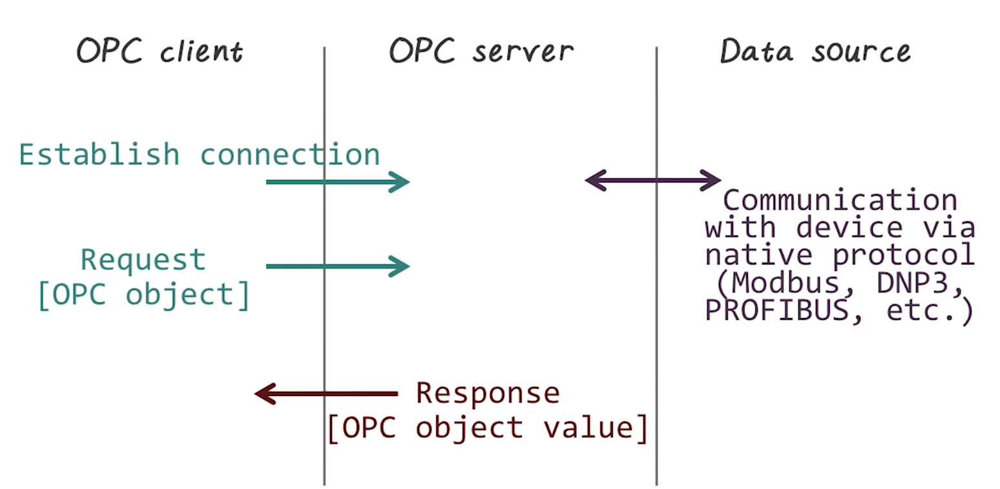

ICPSS Lecture Notes - Lesson 9 - Industrial Network Protocols
Industrial Network Protocols
- Highly specialized protocols, designed for efficiency and reliability
- Common requirements include:
- Real-time synchronization
- Deterministic communication
- Many of these protocols forego security in order to meet ICS requirements
- Protocols deployed across Industrial networks
- Including WAN, business networks, plant and SCADA networks, and fieldbus networks
- Many of these protocols were only over serial channels, but have now evolved to work over ethernet using routable protocols
- For the most part, we can divide industrial protocols into two common categories
- Fieldbus
- Backend
- We’ll also discuss another which doesn’t fit into either bucket
Fieldbus vs Backend Protocols
- Commonly found in process and control
- Deployed to connect sensors and actuators to PLCs, and PLCs to supervisory systems such as HMIs
- Backend protocols commonly deployed on or above supervisory networks, and are used to provide efficient system-to-system communication
- We’ll dive into 5 common prococols
- Fieldbus
- Modicon Communication Bus (Modbus)
- Distributed Network Protocol (DNP3)
- Backend
- Open Process Communications (OPC)
- Inter-Control Center Protocol (ICCP)
- Other
- IEC 61850
- Fieldbus
Modbus
- Invented in 1979 by Modicon to enable PLCs to communicate with real-time computers
- Very widely supported
- Communicates raw messages without authentication or excessive overhead (obviously bad practice by modern standards)
- Application layer protocol (Layer 5 in TCP/IP stack)
- Request-response protocol
- 3 separate PDUs
- Modbus request
- Modbus response
- Modbus exception response

- 3 separate PDUs
- Commands are addressed to specific modbus address. While other devices may receive the message, only the addressed device will respond.
- Data housed in 4 tables, exact implementation is device-specific
Variants
- Modbus RTU and Modbus ASCII
- Support binary and ascii transmissions over serial buses, respectively
- Modbus TCP
- designed to operate on modern networks
- Modbus Plus
- designed to extend the reach of modbus for intereconnected buses using token-passing techniques
- Examples of PDUs for the variants. Many differences, as seen here
Security Concerns
- Lack of Authentication
- Only require use of a valid address, function code, and associated data
- Very simple MITM and Replay vulnerabilities here
- Lack of encryption
- Modbus addresses sent in the clear
- Lack of message checksum (Modbus/TCP only)
- Lack of broadcast suppression
- (serial Modbus only used in a multidrop topology)
Security Recommendations
- Only use between sets of known devices using expected function codes
- Monitor communication with ICS-aware intrusion detection system
- Whitelisting
- Application aware firewall for more critical areas to validate modbus sessions
Distributed Network Protocol
- Began as a serial protocol much like modbus
- Designed for use between “master stations” or “control stations” and slave devices called “outstations”
- Commonly used to connect RTUs configured as “master stations” to IED “outstations” in electric substations
- Introduced in 1990 by Westronic
- Primary motivation for DNP3 was to provide reliable communications in environments common within the electirc utility industry that include high level of electromagnetic interference (EMI)
- Much higher degree of reliability than other industrial protocols
- Accomplished in part with many CRCs
- CRC is “Cyclic Redundancy Check” explained here
- DNP3 was extended to work over IP via encapsulation in TCP or UDP packets in 1998
- Now widely used in not only electirc utility, but also oil and gas, water, and wastewater industries
- Reasons for industry migration from Modbus are f[eatures used by other industries such as:
- report by exception
- data quality indicators
- timestamp data
- 2-pass “select before operate” procedure on outputs
- More reliable than Modbus while remaining efficient and well-suited for real-time uses
- Utilizes several standardized data formats and utilizes timestamps for synchronization of data
- Unlike Modbus and ICCP, DNP3 is bidirectional
- Therefore possible for a substation to initiate and inform the master station of events outside the norm
- Sits at application layer of TCP/IP stack.
- Has its own stack within the application, as shown in image above, corresponding to TCP stack, to offer features at each layer as appropriate
- Retransmission for CRC failure is ensured with multiple CRC embeddings withing header and payload
- DNP3 supports both static and event data, with classes thereof, for finer-grained and more efficient communication
- Provides a method to identify the remote device’s parameters to identify incoming messages and compare them to known point data
- This is efficient because it only requires the master to interact with relevant/changed data
- Request/response/ack communication pattern, as in other protocols. Multiple versions thereof
- Also supports unsolicited responses from outstations and “confirm ack” requests from master station
- Walkthrough of some pcaps of DNP3traffic
Secure DNP3
- Standard DNP3 does not provide any security. Secure DNP3 is a variant that adds authentication to the request/response process
- Challenge occurs on session initiation, potentially after a preset period of time, or on upon a critical request
- Uses a unique session key hashed together from information from both the sender and the challenger
- If using TCP, can also leverage TLS for encryption
- Thus, Secure DNP3 adds authentication, and if using TLS also adds confidentiality
- Often used between master control and an RTU, or between an RTU and different IEDs
Security Concerns of Regular DNP3
- Lack of authentication
- Lack of inherent encryption
- Fairly easy to manipulate due to well-defined nature of actions in the protocol
- Several vulns have been discovered and reported
Process Fieldbus (PROFIBUS)
- Originally developed in the late 1980s
- Initially designed primarily to allow PLCs to communicate with host computers
- Several variants exist
- Profibus PA
- for instrumentation used for process automation
- Profisafe
- for safety applications
- Profidrive
- for high-speed drive applications
- Profibus DP (decentralized periphery)
- Most widely deployed. Itself has three variants
- DP-V0
- DP-V1
- DP-V2
- Each of these is a minor evolutionary step forward
- Three profiles for Profibus communication
- asynchronous
- synchronouse
- via Ethernet using ethertype 0x8892
- Profibus over Ethernet is also called PROFINET
- Profibus PA
- A master-slave protocol that supports multiple master nodes through the use of token sharing
- when a master has control of the token it can communicate with its slaves
- each slave is configured to respond to a single master
- slaves can initiate communication to master or to other slaves in the right conditions
- A master node is usually a PLC or RTU and a slave is usually a sensor or motor (or some other similar small component)
- Supports several physical layer deployments
- Abide by concept of intrinsic safety, meaning power levels too low to ignite fires
Security Concerns
- PROFIBUS lacks authentication inherent to many of its functions, allowing a spoofed node to impersonate a master node, which in turn provides control over all configured slaves
Security Recommendations
- PROFIBUS DP is a naturally segmented serial network
- Normally contained within a small geographical area, such as a section of a plant or manufacturing process
- Thus physical security is the main concern
Industrial Ethernet Protocols
- Industrial Ethernet is the adaptation of the IEEE 802.3 Ethernet standard to real-time industrial automation applications
- General Ethernet does not provide QoS, so this is needed to allow real-time use
- One primary objective was to move toward more “synchronous” mechanisms of communication to prevent data collisions and minimize jitter inherent with “asynchronous” communications like standard Ethernet
- Allows technology to be deployed in critical, time-dependent applications
- Also provides physical enhancements to “harden” the office grade nature of standard Ethernet
- ruggedized wiring, connectors, and hardware
- There are 30 different varieties of Industrial Ethernet. We will discuss 5 (bolded above.
Profinet
- Designed for scalability. Can be deployed across varying network conditions. Each version improved reliability and cycle time speed.
- Security concerns
- Profinet is a real-time ethernet procotol, and as such is susceptible to any of the vulnerabilities of Ethernet
- Lack of authentication and inherent protocol vulnerability common to industrial protocols exacerbated by increased risk because this can be transmitted across standard enterprise and public networks (Ethernet is everywhere)
- Thus, Profinet TCP/IP should be tightly controlled. Within less-trusted business networks, used only over authenticated and encrypted networks
Ethercat
- Real-time Ethernet-based fieldbus protocol classified as “Industrial Ethernet”
- Messages can either be transmitted directly as an Ethernet frame, or encapsulated as a UDP payload
- Communicates large amounts of distributed process data with a single Ethernet frame
- This is good for efficiency because it means few cycles to communicate entire corpus of data
- Security concerns
- As expected, susceptible to all vulnerabilities of standard Ethernet
- EtherCAT is sensitive and highly susceptible to DOS attacks
- Security Recommendations
- secure perimiter
- passive network monitoring with whitelisting of devices
- ICS-aware firewalls and/or IDS
Ethernet Powerlink
- Directly encapsulates ethernet frames
- Cyclic polling of slave devices by a master node
- Multiple phases
- Start of Control
- Isochronous phase
- Slaves respond only if they receive a poll, preserving sequencing
- Asynchronous phase
- allows larger, non-time-critical data to be transmitted
- Process repeats
- Security concerns
- As expected, susceptible to all vulnerabilities of standard Ethernet
- Ethernet Powerlink is sensitive and highly susceptible to DOS attacks
- Easily disrupted via the insertion of rogue Ethernet frames into the network, requiring the separation of Powerlink from other Ethernet systems
- Security Recommendations
- Require a clear demarcation from other networks, needed by protocol anyway. Thus establish appropriate zones
- ICS-aware firewalls and/or IDS
SERCOS III (Serial Real-Time Communication System)
- For communication between industrial controls, motion devices, and IO devices
- V1 and V2 were based on fiber optic ring, v3 is Ethernet-based
- Works directly on ethernet frames
- Supports many straight and rign topologies
- Master-slave protocol operating cyclically in which a single master synch telegram is used to communicate with slaves.
- Slaves are given a specific time in which they can place their information on the bus
- All messages for all nodes are packaged into a master data telegram (MDT)
- Each node knows which portion of the MDT it should read based on a pre-determined byte allocation
- Allocation Telegram (AT) is issued by master but populated by each slave with their appropriate response data.
- Multiple slaves share same AT
- Unified Communication (UC) phase the SERCOS network is open to allow ethernet frames or TCP/UDP traffic from other such devices
- Security concerns
- As expected, susceptible to all vulnerabilities of standard Ethernet
- SERCOS III is sensitive and highly susceptible to DOS attacks
- Through the UC Channel, also shares all vulnerabilities of enabled protocols, and can be used to attack other networks such as enterprise or industrial
- Security Recommendations
- Network isolation is critical
- SERCOS III should only be used on control loops that definitively require it
- IP Channels (UC Channel phase) should be restricted, or avoided if at all possible
- If used, the IP channels should be enclosed within zones consisting of SERCOS III master node and only required IP devices
- ICS-aware firewalls and/or IDS
Backend Protocols
Open Process Communication
- OPC is not actually an industrial protocol, but instead a series of standards specifications
- Designed to provied a higher level of integration between systems and subsystems than a fieldbus protocol
- Motivated by needs of end users, as opposed to vendors, for interacting with different industrial devices
- OPC’s strengths and weaknesses come from its foundation
- Microsoft OLE is a big foundation
- Allows for data presentation to be separate from the application that generated it

- Client-server functional pattern.
- Client calls to server, process executes on server
- Uses RPC for calls
- Used in industrial networks, across many different use cases, to greatly simplify integration across devices
- Security Concerns
- OPC’s use of DCOM and RPC makes it highly vulnerable to attack using multiple vectors
- Shared attack surface with OLE, which is a very popular target
- OPC hosted on unsupported OS’s adds additional risk
- Many basic host security concerns apply because OPC is supported on Windows
- OPC host account on OS presents a big risk if overpriviliged, especially as it will be shared across hosts
- Basically, this is a modern tool on a (relatively) modern platform, so it’s a casualty of all the other threats targeting that platform
- OPC’s use of DCOM and RPC makes it highly vulnerable to attack using multiple vectors
- Security Recommendations
- The newer and designed for security Unified Architecture (OPC-UA) specifications should be used where possible
- Use best practices, as applied to any other windows box
Inter-control Center Communications Protocol (ICCP)
- Designed for communication between control centers within the electric utility industry
- Classified as a backend protocol because it was designed for bidirectional, WAN communication between control centers
- A standardized, common protocol was needed for communication between these disparate control centers which often do different functions and have different owners.
- Uses a master(client)-slave(server) model, with request/response pattern
- Primarily unidirectional, but modern implementations often allow hosts to function as both client and server creating a pseudo-bidirectional pattern
- Operates over almost any network protocol, but commonly uses ISO transport
- Effectively a point-to-point protocol due to use of bilateral table acting as an ACL for each control center
- Security Concerns
- ICCP lacks authentication and encryption and is therefore susceptible to any number of attacks (spoofing, session hijacking, etc)
- There is a Secure ICCP variant that incorporates digital certificate auth and crypt, but it is not widely used. It should be
- Explicitly defined trust relationships can be exploited
- e.g. if bilateral tables get compromised, the jig is entirely up
- Too accessible, as a WAN protocol. Lots of attack surface on WAN (e.g. WAN)
- ICCP lacks authentication and encryption and is therefore susceptible to any number of attacks (spoofing, session hijacking, etc)
- Security Recommendations
- Secure ICCP variants should be used wherever possible and supported by the current vendors installed within a particular site
- Patch and update, there are lots of known vulns for ICCP so leaving old versions up running across WAN is just asking for it.
- Extreme care should be taken in the definition of the bilateral table. It’s the firewall, any mistakes here are a big problem
- Standard modern best practices.
- ICS-aware firewalls and/or IDS
IEC 61850 Standard
- Doesn’t cleanly fit into either Fieldbus or Backend categories
- International Electrotechnical Commission (IEC) standard 61850 was originally conceived for substation automation
- The design concepts are being incorporated throughout the generation, transmission, and distribution areas of the power industry and may even see adoption in the consumer/load component
- Extended to domains beyond isolated substation automation
- We will discuss in its original context, but these concepts are applicable wherever the standard is
- For almost 20 years, comms were done using coper wires and legacy protocols described above.
- This generally sucked, for a variety of reasons
- Ethernet has helped with some of this, but a broader solution was needed.
- Enter 61850
- First version of 61850 was released in 2005 with several broad goals
- Single complete standard for the equipment and related data in a substation:
- configuring
- monitoring
- reporting
- storing
- communicating
- Single complete standard for the equipment and related data in a substation:
- Aimed to permit interoperability of equipment afrom different manufacturers.
- Further, common format for this equipment’s data and configs
- Has a data and communications model
- Designed to run on top of a standard Ethernet LAN
- Can be either coper or fiber, but fiber is preferred for multiple reasons
- Defines two communication buses
- Process bus
- sends power systems information from CV/VT/Transducers to HMIs or PLCs or IEDs
- very sensitive to delay, so very high throughput
- Often has redundant components to ensure high availability
- Station bus
- connects all the IEDs to each other and to a router for external communication
- used for less sensitive data compared to process bus, but still built for HA
- Process bus
- Communications protocols can be classified into 3 different groups
- machine to machine
- based on generic substation event (GSE)
- a peer to peer layer 2 protocol that multicasts events to multiple devics, typically IED to IEDs
- Further divided into:
- Generic Substation State Events (GSSE)
- Seldom used
- Only state events
- Generic Object Oriented Substation Events (GOOSE)
- Most common
- Any event. In practice, all events.
- Generic Substation State Events (GSSE)
- Further divided into:
- a peer to peer layer 2 protocol that multicasts events to multiple devics, typically IED to IEDs
- based on generic substation event (GSE)
- client server
- configuration protocols
- machine to machine
- The 61850 standard does not include security specifications of its own
- defers to IEC 62351-6
- IEC 62351 provides security specifications for substation communications and is broken down into several parts
- 62351-3 requries TLS for all TCP/IP based communications, as well as node and message authentication
- Encryption is not supported because it would be impossible to maintain GOOSE’s 4ms performance requirement, so VLANs are used for protection
- This is not really secure. VLAN ID spoofing would allow an attacker to hop between VLANs, bypassing these Layer 3 controls
Advanced Metering Infrastructure and the Smart Grid
- The attack surface here is huge, and once compromised lots of traversal is possible
- AMI has lots of features that are very promising, remote everything basically
- Smart grid has introduced new protocols in the “Home Area Network” or HAN space
Security Concerns
- AMI
- it’s an extremely large network that touches many other networks. lots of attack surface
- The security concerns of the smart grid are numerous
- Smart grid protocols vary widely in their inherent security and vulnerabilities
- Smart meters are readily accessible, and therefore require board-level and chip-level protections
- Neighborhood, home, and business LANs can be used as ingress to the AMI and as a target from the AMI
- Smart grids are ultimately interconnected with critical power generation, transmission, and distribution systems
- Smart grids represent a very juicy target to a variety of threat actors
Security Recommendations
- Risk and threat analysis before smart grid deployments, in their planning stages
- similarly, assessment of the end users who will be connected to the grid, as they represent an attack vector
- Clear delineation, separation of services, and the establishment of strong defense-in-depth at the perimeters